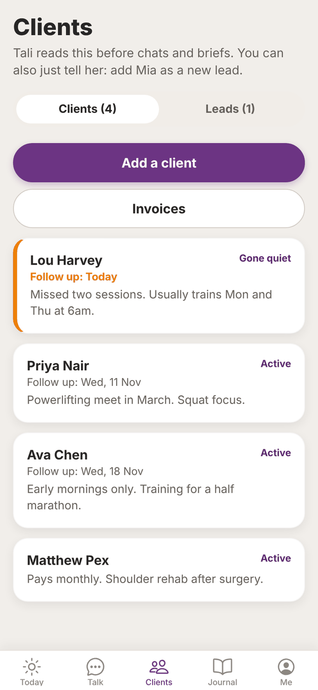
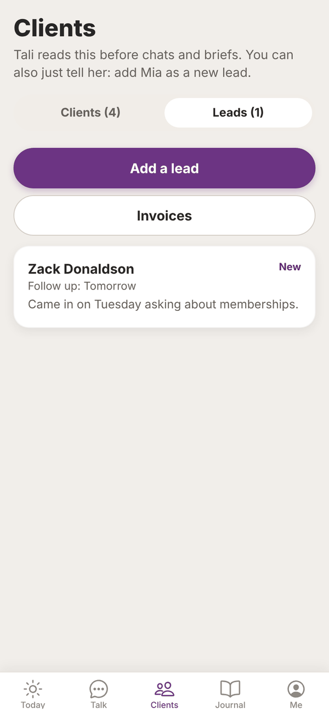
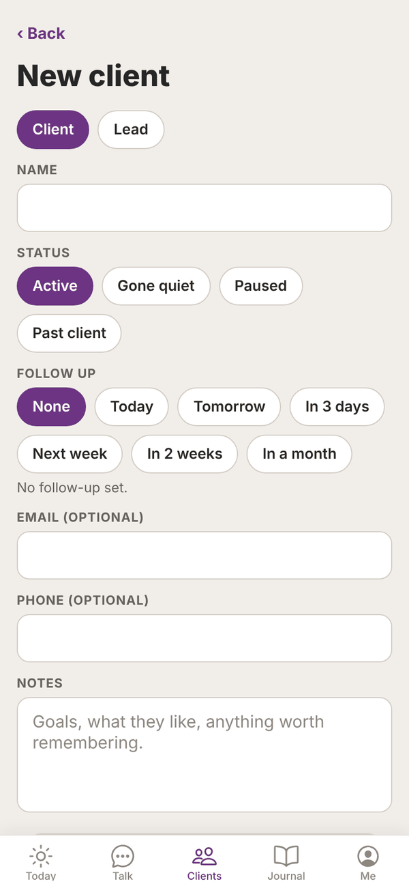
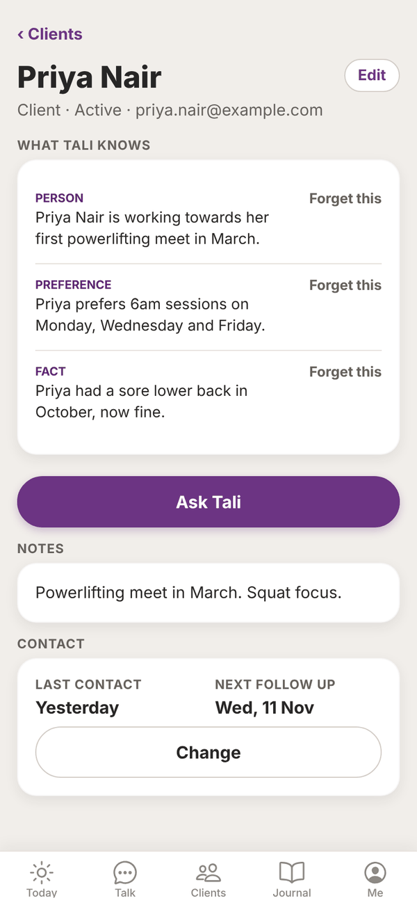
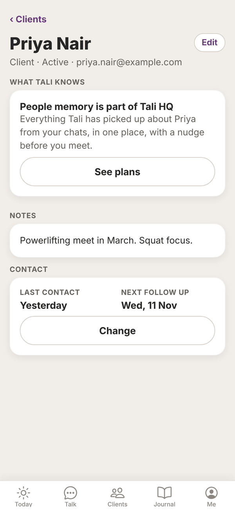

Tali HQ guide
Clients and leads
Keep your clients and leads in one list with follow-up dates, and see what Tali remembers about each person.
The Clients tab holds the people you work with: clients you have now and leads you're talking to. Tali reads this list before every chat and brief, nudges you when a follow-up is due and spots who's gone quiet. Free
The list#


- Switch between Clients and Leads at the top. The number in brackets is how many you have.
- People are sorted by next follow-up date, soonest first, then by name.
- A follow-up that's due today or overdue shows in orange, with an orange edge on the card.
- With more than 6 people, a Search box appears. It searches names and notes.
- Invoices opens your invoices. See Invoices.
Add a client or lead#

- On the Clients or Leads tab, tap Add a client (or Add a lead).
- Choose Client or Lead at the top.
- Type their Name. This is the only thing you must fill in.
- Pick a Status. Clients: Active, Gone quiet, Paused or Past client. Leads: New, Talking, Won or Lost.
- Under Follow up, pick None, Today, Tomorrow, In 3 days, Next week, In 2 weeks or In a month.
- Add Email (optional), Phone (optional) and Notes: goals, what they like, anything worth remembering.
- Tap Contacted today if you've just been in touch.
- Tap Save.
Or just tell Tali#
In Talk, say things like:
- "Add Ava Chen as a client, she trains early mornings."
- "Zack Donaldson is a new lead, follow up Thursday."
- "Lou has gone quiet."
Tali adds or updates the person (she matches by name) and confirms in one line.
A person's page#
Tap anyone on the list to open their page.

- Edit: change their details. Save brings you back to this page.
- What Tali knows Tali HQ: everything Tali has picked up about this person from your chats. Tap Forget this (then Sure?) to remove anything.
- Ask Tali Tali HQ: opens Talk with "What do I know about" and their name ready to send.
- Notes: your notes about them.
- Contact: Last contact and Next follow up. Tap Change to set a new follow-up or tap Contacted today, then Done.
On Free, What Tali knows shows "People memory is part of Tali HQ" with See plans.

Edit or delete#
Open the person, tap Edit, change anything and tap Save. To delete, tap Delete at the bottom, then Tap again to delete. Deleting can't be undone.
Follow-ups#
When a follow-up is due, it shows under Due today on Today as "Follow up" and the name. Tick it off there, or open the person and set the next one. Overdue follow-ups also count against your business health. Tali HQ
On Pro, two Rules can look after this for you: Spot quiet clients and Never miss a new lead. See Night school and Rules.
Before a meeting Tali HQ#
With a calendar connected, if one of today's events has a client's email on the invite or their name in the title, Today shows a meeting nudge with the top things Tali knows about them.
Questions#
Is the Clients tab on the Free plan?
Yes. Your list, statuses, follow-ups and notes are on every plan. What Tali knows about each person and the Ask Tali button are part of Tali HQ.
What's the difference between a client and a lead?
Clients are people you work with now. Leads are people you're talking to who haven't signed up yet. When a lead signs up, open them, tap Edit and switch them to Client.
How does Tali know someone has gone quiet?
Your business health counts active clients with no contact in 2 weeks. On Pro, the Spot quiet clients rule can mark them "Gone quiet" for you. Tap Contacted today whenever you're in touch to keep it right.
Can I import a list of clients?
There's no import screen. Tell Tali about a few at a time in Talk (she adds up to three per message), or add them on the Clients tab.
I deleted someone by mistake.
Deleting can't be undone. Add them again, or tell Tali in Talk.